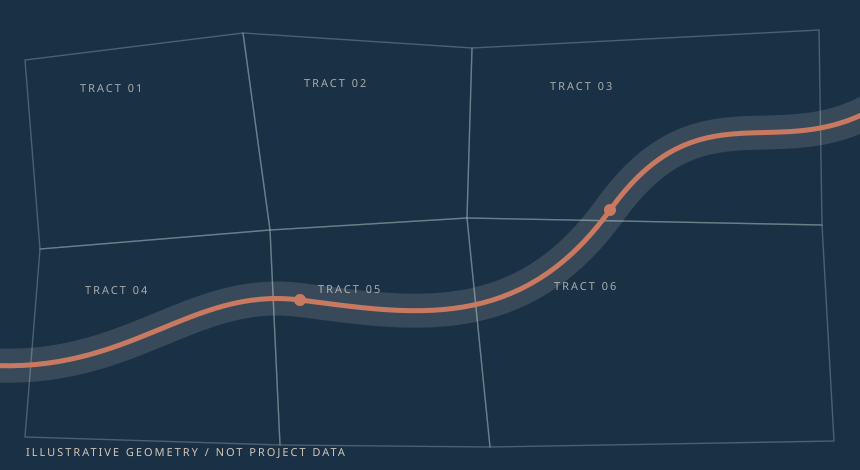

SERVICES / 02
Right-of-Way
Acquisition
Easements and property rights for pipelines, transmission, utilities, telecommunications, roads, and other infrastructure corridors.
CORRIDOR / OWNERSHIP / ACQUISITION
When a route changes, the land work changes with it.
A revised alignment can introduce new parcels, owners, title questions, mapping, and negotiations. APS coordinates those records as the corridor develops.

01 / RIGHTS
Property rights
- Permanent and temporary easements
- Temporary and additional workspace
- Ingress, egress, and access agreements
- Property restrictions and restoration terms
02 / ACQUISITION
Acquisition work
- Corridor ownership, title, and encumbrance review
- Landowner negotiation and compensation
- Tract acquisition tracking and reporting
- Agreement execution and documentation
- Agency, utility, and crossing coordination